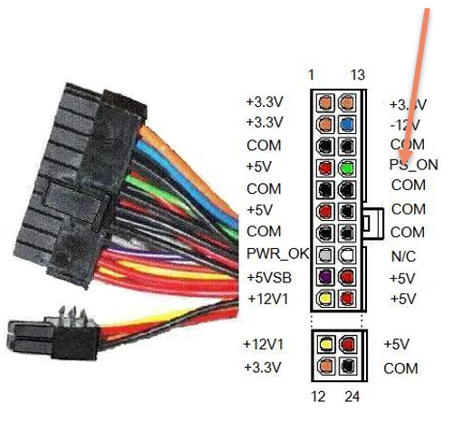

Als je gewoon de voeding verbindt met het stopcontact dan zal de computer niet automatisch opstarten.
De voeding is wel actief en vaak zal je een groen lampje zien branden op het moederbord zelf maar de computer start niet op. De reden hiervoor is omdat het systeem nog wacht op het PS_ON signaal.
De computer zelf gaat maar spanning krijgen wanneer het PS_ON signaal geschakeld wordt van HOOG naar LAAG.
